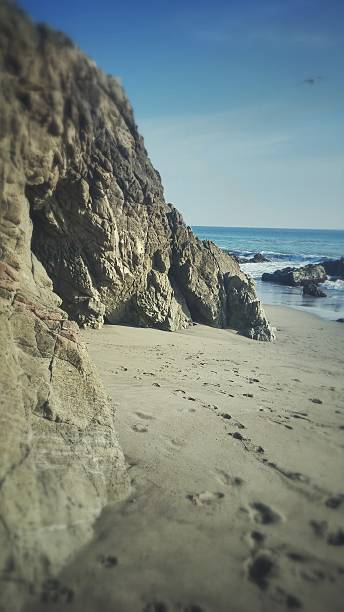
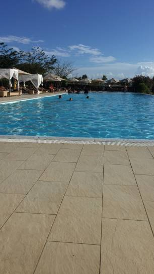
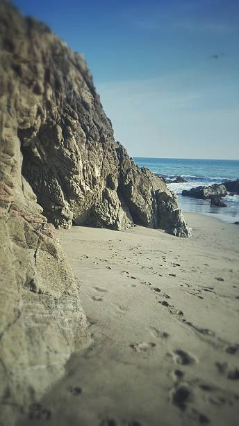
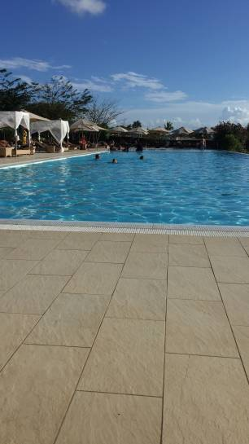
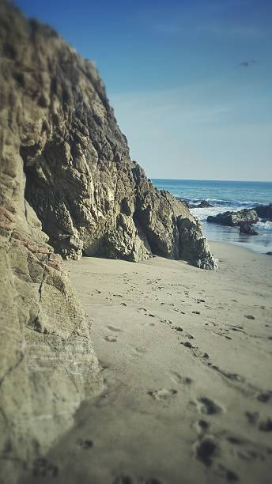
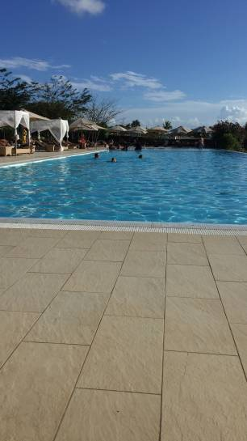
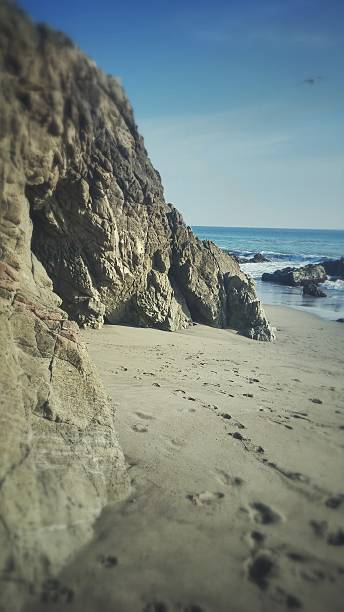
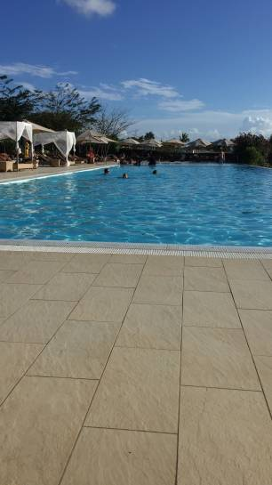

Zanzibár varázslatos hely, ahol Stone Town történelmi és kulturális kincsei mellett fűszerszagú kertek, trópusi erdők és kék vizek várják a látogatókat. A 5 napos kirándulás alatt megismerhettük a helyi kultúrát, élveztük a tengerparti pihenést és felfedeztük a környék szigeteit és korallzátonyait. Ez az utazás emlékezetes élményekkel gazdagított bennünket.